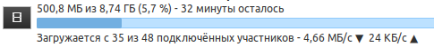

Сегодня, 19 сентября 2021 года, на провайдере Уфанет опять наблюдаются блокировки сети DHT.
Отправка UDP-запросов, начинающиеся с байтов 64 31 3a (d1:), приводят к блокировке по связке source port + destination IP + destination port в рамках UDP-сессии, т.е. если хотя бы раз был отправлен пакет, начинающийся с этих байтов, никакие пакеты больше с этого source port на этот ip-адрес и destination port доставляться не будут, до момента таймаута сессии connection tracking на DPI, который равен 4-5 минутам.
При этом, если начать сессию с отправки какого-то другого UDP-пакета (например, отправить просто букву A), а затем в другом/других пакетах отправлять DHT-пакеты, то блокировки не происходит.
Также можно разбить (фрагментировать) первый UDP-пакет в сессии на несколько пакетов: в первом отправить 64, а во втором 31 3a…. В этом случае также блокировки не происходит.
Команды для проверки доступности DHT, которые я выкладывал ранее:
dht.libtorrent.org:
nping --udp -g 12345 -p 25401 -c1 dht.libtorrent.org --data "\x64\x31\x3a\x61\x64\x32\x3a\x62\x73\x69\x31\x65\x32\x3a\x69\x64\x32\x30\x3a\x75\x6c\x1f\xb3\x52\xb2\xd2\x6d\xc9\xd5\x57\x7c\x85\xbd\x80\x66\x18\x56\x00\xfd\x39\x3a\x69\x6e\x66\x6f\x5f\x68\x61\x73\x68\x32\x30\x3a\x75\x6c\x1f\xb3\x52\xb2\xd2\x6d\xc9\xd5\x57\x7c\x4a\x6d\x72\xdb\x91\x7c\x54\xcc\x65\x31\x3a\x71\x39\x3a\x67\x65\x74\x5f\x70\x65\x65\x72\x73\x31\x3a\x74\x32\x3a\x1a\x2e\x31\x3a\x76\x34\x3a\x4c\x54\x01\x2d\x31\x3a\x79\x31\x3a\x71\x65"
router.bittorrent.com:
nping --udp -g 12345 -p 6881 -c1 router.bittorrent.com --data "\x64\x31\x3a\x61\x64\x32\x3a\x62\x73\x69\x31\x65\x32\x3a\x69\x64\x32\x30\x3a\x75\x6c\x1f\xb3\x52\xb2\xd2\x6d\xc9\xd5\x57\x7c\x85\xbd\x80\x66\x18\x56\x00\xfd\x39\x3a\x69\x6e\x66\x6f\x5f\x68\x61\x73\x68\x32\x30\x3a\x75\x6c\x1f\xb3\x52\xb2\xd2\x6d\xc9\xd5\x57\x7c\x4a\x6d\x72\xdb\x91\x7c\x54\xcc\x65\x31\x3a\x71\x39\x3a\x67\x65\x74\x5f\x70\x65\x65\x72\x73\x31\x3a\x74\x32\x3a\x1a\x2e\x31\x3a\x76\x34\x3a\x4c\x54\x01\x2d\x31\x3a\x79\x31\x3a\x71\x65"
Опция -g задает source port.
Клиенты BitTorrent, по крайней мере некоторые, похоже, просто отбрасывают неизвестные пакеты по UDP, поэтому можно отправить какой угодно «мусор» реальным пирам в первом пакете, и DHT начнёт работать.
$ nping --udp -g 12330 -p 25401 -c1 dht.libtorrent.org --data-string A; \
nping --udp -g 12330 -p 25401 -c1 dht.libtorrent.org --data "\x64\x31\x3a\x61\x64\x32\x3a\x62\x73\x69\x31\x65\x32\x3a\x69\x64\x32\x30\x3a\x75\x6c\x1f\xb3\x52\xb2\xd2\x6d\xc9\xd5\x57\x7c\x85\xbd\x80\x66\x18\x56\x00\xfd\x39\x3a\x69\x6e\x66\x6f\x5f\x68\x61\x73\x68\x32\x30\x3a\x75\x6c\x1f\xb3\x52\xb2\xd2\x6d\xc9\xd5\x57\x7c\x4a\x6d\x72\xdb\x91\x7c\x54\xcc\x65\x31\x3a\x71\x39\x3a\x67\x65\x74\x5f\x70\x65\x65\x72\x73\x31\x3a\x74\x32\x3a\x1a\x2e\x31\x3a\x76\x34\x3a\x4c\x54\x01\x2d\x31\x3a\x79\x31\x3a\x71\x65"
Starting Nping 0.7.80 ( https://nmap.org/nping ) at 2021-09-19 17:59 UTC
SENT (0.0664s) UDP 172.17.0.2:12330 > 185.157.221.247:25401 ttl=64 id=16440 iplen=29
nping_event_handler(): READ-PCAP killed: Resource temporarily unavailable
Max rtt: N/A | Min rtt: N/A | Avg rtt: N/A
Raw packets sent: 1 (29B) | Rcvd: 0 (0B) | Lost: 1 (100.00%)
Nping done: 1 IP address pinged in 1.08 seconds
Starting Nping 0.7.80 ( https://nmap.org/nping ) at 2021-09-19 17:59 UTC
SENT (0.0673s) UDP 172.17.0.2:12330 > 185.157.221.247:25401 ttl=64 id=34359 iplen=139
RCVD (0.1285s) UDP 185.157.221.247:25401 > 172.17.0.2:12330 ttl=52 id=54585 iplen=184
Max rtt: 61.242ms | Min rtt: 61.242ms | Avg rtt: 61.242ms
Raw packets sent: 1 (139B) | Rcvd: 1 (184B) | Lost: 0 (0.00%)
Nping done: 1 IP address pinged in 1.11 seconds
Строка RCVD (0.1285s) UDP 185.157.221.247:25401 > 172.17.0.2:12330 ttl=52 id=54585 iplen=184 говорит о получении ответа от реального узла dht.libtorrent.org, если вместо DHT-хендшейка сначала отправить ему букву “A” отдельным пакетом.
Предположительно, блокировка DHT вызвана использованием фреймворка NewNode в приложениях Навального для мобильных устройств, который использует эту сеть для поиска пиров.
Проверил сейчас на Теле2, нет такого.
Зачем это делать, если выборы уже закончились, тем более на ограниченном кругу операторов? Гораздо понятнее было бы именно в дни выборах запустить эту блокировку у всех.
В их действиях в последнее время все меньше логики… Хотя, может быть, это все как раз очень логично, только мы об этом узнаем позже.
Плохо во всём этом разбираюсь, но я нашёл программу nmap и использовал две команды.
г. Нижний Новгород, Провайдер Уфанет
Где-то через месяц у меня предстоит переход на провайдер Ростелеком(к сожалению) и очень переживаю за возможность пользования торрентов. Как бы не пришлось покупать vps и настраивать shadowsocks со всякими дополнениями к нему
$ nping --udp -g 12345 -p 25401 -c1 dht.libtorrent.org --data "\x64\x31\x3a\x61\x64\x32\x3a\x62\x73\x69\x31\x65\x32\x3a\x69\x64\x32\x30\x3a\x75\x6c\x1f\xb3\x52\xb2\xd2\x6d\xc9\xd5\x57\x7c\x85\xbd\x80\x66\x18\x56\x00\xfd\x39\x3a\x69\x6e\x66\x6f\x5f\x68\x61\x73\x68\x32\x30\x3a\x75\x6c\x1f\xb3\x52\xb2\xd2\x6d\xc9\xd5\x57\x7c\x4a\x6d\x72\xdb\x91\x7c\x54\xcc\x65\x31\x3a\x71\x39\x3a\x67\x65\x74\x5f\x70\x65\x65\x72\x73\x31\x3a\x74\x32\x3a\x1a\x2e\x31\x3a\x76\x34\x3a\x4c\x54\x01\x2d\x31\x3a\x79\x31\x3a\x71\x65"
Starting Nping 0.7.92 ( https://nmap.org/nping ) at 2021-09-20 20:22 RTZ 2 (чшьр)
SENT (0.0750s) UDP 192.168.0.174:12345 > 185.157.221.247:25401 ttl=64 id=20449 iplen=139
RCVD (0.1100s) UDP 185.157.221.247:25401 > 192.168.0.174:12345 ttl=52 id=63019 iplen=184
Max rtt: 34.000ms | Min rtt: 34.000ms | Avg rtt: 34.000ms
Raw packets sent: 1 (153B) | Rcvd: 1 (184B) | Lost: 0 (0.00%)
Nping done: 1 IP address pinged in 0.58 seconds
$ nping --udp -g 12345 -p 6881 -c1 router.bittorrent.com --data "\x64\x31\x3a\x61\x64\x32\x3a\x62\x73\x69\x31\x65\x32\x3a\x69\x64\x32\x30\x3a\x75\x6c\x1f\xb3\x52\xb2\xd2\x6d\xc9\xd5\x57\x7c\x85\xbd\x80\x66\x18\x56\x00\xfd\x39\x3a\x69\x6e\x66\x6f\x5f\x68\x61\x73\x68\x32\x30\x3a\x75\x6c\x1f\xb3\x52\xb2\xd2\x6d\xc9\xd5\x57\x7c\x4a\x6d\x72\xdb\x91\x7c\x54\xcc\x65\x31\x3a\x71\x39\x3a\x67\x65\x74\x5f\x70\x65\x65\x72\x73\x31\x3a\x74\x32\x3a\x1a\x2e\x31\x3a\x76\x34\x3a\x4c\x54\x01\x2d\x31\x3a\x79\x31\x3a\x71\x65"
Starting Nping 0.7.92 ( https://nmap.org/nping ) at 2021-09-20 20:23 RTZ 2 (чшьр)
SENT (0.0770s) UDP 192.168.0.174:12345 > 67.215.246.10:6881 ttl=64 id=19539 iplen=139
RCVD (0.2610s) UDP 67.215.246.10:6881 > 192.168.0.174:12345 ttl=42 id=59672 iplen=514
Max rtt: 183.000ms | Min rtt: 183.000ms | Avg rtt: 183.000ms
Raw packets sent: 1 (153B) | Rcvd: 1 (514B) | Lost: 0 (0.00%)
Nping done: 1 IP address pinged in 0.42 seconds
У вас нет блокировки. Пакеты уходят и приходят.
Выполните, пожалуйста, следующую команду:
tracert dht.libtorrent.org
Трассировка маршрута к dht.libtorrent.org [185.157.221.247]
с максимальным числом прыжков 30:
1 1 ms <1 мс 1 ms 192.168.0.1
2 13 ms <1 мс <1 мс 100.79.0.1
3 <1 мс 3 ms <1 мс 10.1.139.2
4 2 ms 2 ms 1 ms 10.1.139.17
5 6 ms 3 ms 3 ms 10.0.20.221
6 1 ms 2 ms 4 ms 10.17.0.154
7 15 ms 10 ms 3 ms 194.186.77.173
8 * * 24 ms mx01.Stockholm.gldn.net [79.104.235.78]
9 24 ms 24 ms 26 ms netnod-ix-ge-b-sth-1500.portlane.net [194.68.128.194]
10 26 ms 25 ms 24 ms be-1.pe3.sto1.se.portlane.net [80.67.4.137]
11 24 ms 24 ms 24 ms be-1-10.vbdc-cr4.glesys.net [80.67.0.193]
12 31 ms 32 ms 33 ms te-0-0-0-7.fbg-cr2.glesys.net [193.108.196.93]
13 32 ms 32 ms 32 ms te-2-1.fbg-pe1.glesys.net [193.108.196.94]
14 32 ms 32 ms 32 ms 185-157-221-247-static.glesys.net [185.157.221.247]
Трассировка завершена.
Это идея на будущее для доработки nfqws и goodbyedpi
пока видится 2 варианта : fake для QUIC и zero/random для остального
мне раньше казалось, что DPI будут работать с UDP только stateless
а Ростелеком точно торренты блокирует или это под вопросом?
Ростелеком Санкт-Петербург не блокирует.
наблюдаю необъяснимую потерю скорости отдачи торрентов. Ещё вчера была 8Мбайт/сек, сейчас не поднимается выше 1Мбайта/сек. Провайдер - Ростелеком.
количество и состав торрентов не изменились
Upd:
Вырубили электричество на 5 минут. После скорость снова возросла до 5мбит/сек.
Я - паникёр. Отбой тревоги
А есть теоретическая возможность у Ростелекома ограничивать скорость скачивания в торрент-клиенте?
Есть, если есть ТСПУ. Но обычно скорость торрентов ограничивают мобильные операторы.
а это можно как-то проверить и по возможности обойти?
В домашнем регионе у РТ скорость до гигабита, так? Если да, то раздайте торрент у другого человека в вашем городе с РТ, и посмотрите какая будет скорость у вас. Если ожидания не будут оправданы, проверьте также и скачивание файла с веб сервера (miniweb подойдет)
A post was split to a new topic: Поддержка BitTorrent
Со вчерашнего дня пропали все DHT пиры, провайдер wifire (chebnet), связано ли с блокировками?
$ nping --udp -g 6881 -p 25401 -c1 dht.libtorrent.org --data "\x64\x31\x3a\x61\x64\x32\x3a\x62\x73\x69\x31\x65\x32\x3a\x69\x64\x32\x30\x3a\x75\x6c\x1f\xb3\x52\xb2\xd2\x6d\xc9\xd5\x57\x7c\x85\xbd\x80\x66\x18\x56\x00\xfd\x39\x3a\x69\x6e\x66\x6f\x5f\x68\x61\x73\x68\x32\x30\x3a\x75\x6c\x1f\xb3\x52\xb2\xd2\x6d\xc9\xd5\x57\x7c\x4a\x6d\x72\xdb\x91\x7c\x54\xcc\x65\x31\x3a\x71\x39\x3a\x67\x65\x74\x5f\x70\x65\x65\x72\x73\x31\x3a\x74\x32\x3a\x1a\x2e\x31\x3a\x76\x34\x3a\x4c\x54\x01\x2d\x31\x3a\x79\x31\x3a\x71\x65"
Starting Nping 0.7.94 ( https://nmap.org/nping ) at 2023-09-06 04:29 MSK
SENT (0.0040s) UDP packet with 111 bytes to dht.libtorrent.org:25401 (185.157.221.247:25401)
Max rtt: N/A | Min rtt: N/A | Avg rtt: N/A
UDP packets sent: 1 | Rcvd: 0 | Lost: 1 (100.00%)
Nping done: 1 IP address pinged in 1.01 seconds
$ nping --udp -g 6881 -p 6881 -c1 router.bittorrent.com --data "\x64\x31\x3a\x61\x64\x32\x3a\x62\x73\x69\x31\x65\x32\x3a\x69\x64\x32\x30\x3a\x75\x6c\x1f\xb3\x52\xb2\xd2\x6d\xc9\xd5\x57\x7c\x85\xbd\x80\x66\x18\x56\x00\xfd\x39\x3a\x69\x6e\x66\x6f\x5f\x68\x61\x73\x68\x32\x30\x3a\x75\x6c\x1f\xb3\x52\xb2\xd2\x6d\xc9\xd5\x57\x7c\x4a\x6d\x72\xdb\x91\x7c\x54\xcc\x65\x31\x3a\x71\x39\x3a\x67\x65\x74\x5f\x70\x65\x65\x72\x73\x31\x3a\x74\x32\x3a\x1a\x2e\x31\x3a\x76\x34\x3a\x4c\x54\x01\x2d\x31\x3a\x79\x31\x3a\x71\x65"
Starting Nping 0.7.94 ( https://nmap.org/nping ) at 2023-09-06 04:30 MSK
SENT (0.0105s) UDP packet with 111 bytes to router.bittorrent.com:6881 (67.215.246.10:6881)
Max rtt: N/A | Min rtt: N/A | Avg rtt: N/A
UDP packets sent: 1 | Rcvd: 0 | Lost: 1 (100.00%)
Nping done: 1 IP address pinged in 1.01 seconds
$ nping --udp -g 6881 -p 25401 -c1 dht.libtorrent.org --data-string A; \
nping --udp -g 6881 -p 25401 -c1 dht.libtorrent.org --data "\x64\x31\x3a\x61\x64\x32\x3a\x62\x73\x69\x31\x65\x32\x3a\x69\x64\x32\x30\x3a\x75\x6c\x1f\xb3\x52\xb2\xd2\x6d\xc9\xd5\x57\x7c\x85\xbd\x80\x66\x18\x56\x00\xfd\x39\x3a\x69\x6e\x66\x6f\x5f\x68\x61\x73\x68\x32\x30\x3a\x75\x6c\x1f\xb3\x52\xb2\xd2\x6d\xc9\xd5\x57\x7c\x4a\x6d\x72\xdb\x91\x7c\x54\xcc\x65\x31\x3a\x71\x39\x3a\x67\x65\x74\x5f\x70\x65\x65\x72\x73\x31\x3a\x74\x32\x3a\x1a\x2e\x31\x3a\x76\x34\x3a\x4c\x54\x01\x2d\x31\x3a\x79\x31\x3a\x71\x65"
Starting Nping 0.7.94 ( https://nmap.org/nping ) at 2023-09-06 04:32 MSK
SENT (0.0028s) UDP packet with 1 bytes to dht.libtorrent.org:25401 (185.157.221.247:25401)
Max rtt: N/A | Min rtt: N/A | Avg rtt: N/A
UDP packets sent: 1 | Rcvd: 0 | Lost: 1 (100.00%)
Nping done: 1 IP address pinged in 1.00 seconds
Starting Nping 0.7.94 ( https://nmap.org/nping ) at 2023-09-06 04:32 MSK
SENT (0.0062s) UDP packet with 111 bytes to dht.libtorrent.org:25401 (185.157.221.247:25401)
Max rtt: N/A | Min rtt: N/A | Avg rtt: N/A
UDP packets sent: 1 | Rcvd: 0 | Lost: 1 (100.00%)
Nping done: 1 IP address pinged in 1.01 seconds
$ traceroute dht.libtorrent.org
traceroute to dht.libtorrent.org (185.157.221.247), 30 hops max, 60 byte packets
1 _gateway (192.168.1.1) 0.642 ms 0.611 ms 0.594 ms
2 chb-b21-p4.ti.ru (212.1.254.164) 2.005 ms 1.908 ms 1.923 ms
3 212.1.240.218 (212.1.240.218) 2.492 ms 2.599 ms 2.536 ms
4 178.176.191.136 (178.176.191.136) 4.294 ms 3.675 ms 4.305 ms
5 * * *
6 * * *
7 * * *
8 * * *
9 83.169.204.78 (83.169.204.78) 36.105 ms 35.896 ms 83.169.204.82 (83.169.204.82) 35.506 ms
10 netnod-ix-ge-a-sth-1500.portlane.net (194.68.123.194) 54.231 ms 53.404 ms 54.309 ms
11 be-1.cr2.got1.se.portlane.net (80.67.4.146) 54.669 ms 55.175 ms 56.999 ms
12 be-9.cr2.fal4.se.portlane.net (80.67.4.195) 58.010 ms 57.322 ms 54.711 ms
13 eth-52-2.le4.fal4.se.portlane.net (80.67.4.202) 53.836 ms 54.165 ms eth-52-2.le3.fal4.se.portlane.net (80.67.4.200) 55.630 ms
14 vl-166.z10-03-05.fal4.se.portlane.net (46.246.38.1) 54.626 ms 54.905 ms 56.152 ms
15 185-157-221-247-static.glesys.net (185.157.221.247) 55.709 ms 56.878 ms 56.518 ms
На рутрекере тоже массовые жалобы на работу торрентов.
Похоже на всех провайдерах заблочили. 3 прова проводных в спб одна картина.
Блокируются в stateful режиме исходящие udp пакеты с src портом 1025…65535 на любые порты dst, с длиной от 101 до 399 байт (100<x<400), начинающиеся с “d1” и заканчивающиеся “e”
src port <=1024 не блокируются. поэтому один из вариантов заставить пакет проходить - назначить торрент клиенту порт из нижнего диапазона. Порт 1024 уникален тем, что он не требует рута, потому его можно использовать на unix/android
обычно пробив работает только в одну сторону (должно быть из-за множественных ТСПУ). после пробива обратные пакеты по той же связке src_port-dst_port с d1…e ходить не начинают. нужен пробив с обоих сторон, и потому с обходом не все так просто.
nfqws помогает, с ним количество DHT узлов быстро подпрыгивает до сотен, без него топчется на 1-2
Но проблема, что от других юзеров пакеты тоже блокируются, потому работает кое-как
Интересный момент. Пробовал отправлять себе с VPS из финки d1…e - не доходит. В финке нет ТСПУ.
Однако, от некоторых IP эти пакеты доходят. Страны в основном не Россия. Германия, США засветились. Но есть и парочка пакетов и от российских провайдеров.
Предполагаю, что все-таки пакеты на ТСПУ блокируются только исходящие, но кое-где стоят ТСПУ у магистралов, которые интерпретируют направление непонятно каким образом.
У некоторых Российских провайдеров все еще нет ТСПУ, либо он работает неправильно, либо по каким-то причинам там не задействовали блок.
Потому эффект получается такой : все исходящие блок, входящие - почти все блок.
Если бы все ТСПУ блочили и входящие, то мне бы не дошло ничего и ниоткуда.
Проводной МТС, северо-запад, аналогично
Может, это связано с выборами.
В прошлый раз DHT блокировали из-за навальновской проги с кандидатами.
УГ и блокировщик УГ это плохой (хороший) и хороший (плохой) полицейский.
У Lantern, Zeronet тоже DHT используется.
Скорее всего. Таких совпадений не бывает.
Может быть через несколько дней отключат.
Это сигнал. Ждем цифру 5.
Обнаружил, что пакеты с src port 1…1024 не блокируются.
Если бы все дружно изменили порт торент клиента на <=1024 (для android 1024 прокатит без рута), то у нас бы снова заработал DHT
Спасибо, хоть и поменял только у себя, но заметно лучше.
Порт входящих подключений в торрент клиенте влияет и на исходящий DHT?
Я так понимаю порт входящих подключений в торренте это и исходящий порт для соединения с пирами (сидами/личами). Но применяется ли он и для исходящих DHT запросов?
Видимо да, потому что в шарке с другого порта ничего не идет
qbittorrent ведет себя так, остальные не проверял
Лучше, но пиров практически 0 везде. Изредка кто-то еще появляется
nping всеравно говорит что ответа нет. Поменял порт в параметре -g
# nping --udp -p 4444 -g 1025 1.1.1.1 --data 64313a6164323a696432303a2e2b4e412da2d4757414dadb459677ce91694ab7393a696e666f5f6861736832303a3b0ac215c5d9e4bea7be93e4d9184fc1a33249c265313a71393a6765745f7065657273313a74323ae4e2313a76343a4c540208313a79313a7165
Starting Nping 0.7.91 ( https://nmap.org/nping ) at 2023-09-06 17:04 MSK
SENT (0.1050s) UDP x.x.x.x:1025 > 1.1.1.1:4444 ttl=64 id=17131 iplen=132
SENT (1.1082s) UDP x.x.x.x:1025 > 1.1.1.1:4444 ttl=64 id=17131 iplen=132
SENT (2.1181s) UDP x.x.x.x:1025 > 1.1.1.1:4444 ttl=64 id=17131 iplen=132
^C
Max rtt: N/A | Min rtt: N/A | Avg rtt: N/A
Raw packets sent: 3 (396B) | Rcvd: 0 (0B) | Lost: 3 (100.00%)
Nping done: 1 IP address pinged in 2.34 seconds
# nping --udp -p 4444 -g 1024 1.1.1.1 --data 64313a6164323a696432303a2e2b4e412da2d4757414dadb459677ce91694ab7393a696e666f5f6861736832303a3b0ac215c5d9e4bea7be93e4d9184fc1a33249c265313a71393a6765745f7065657273313a74323ae4e2313a76343a4c540208313a79313a7165
Starting Nping 0.7.91 ( https://nmap.org/nping ) at 2023-09-06 17:04 MSK
SENT (0.1038s) UDP x.x.x.x:1024 > 1.1.1.1:4444 ttl=64 id=10912 iplen=132
RCVD (0.3613s) UDP 202.61.226.152:6882 > x.x.x.x:1024 ttl=53 id=57810 iplen=95
RCVD (0.3668s) UDP 146.19.24.245:43824 > x.x.x.x:1024 ttl=50 id=15931 iplen=95
RCVD (0.3806s) UDP 144.126.233.32:6882 > x.x.x.x:1024 ttl=51 id=48849 iplen=95
SENT (1.1074s) UDP x.x.x.x:1024 > 1.1.1.1:4444 ttl=64 id=10912 iplen=132
RCVD (1.1081s) UDP 18.196.86.103:6992 > x.x.x.x:1024 ttl=242 id=16918 iplen=104
RCVD (1.1081s) UDP 207.180.192.206:39380 > x.x.x.x:1024 ttl=53 id=54148 iplen=125
SENT (2.1177s) UDP x.x.x.x:1024 > 1.1.1.1:4444 ttl=64 id=10912 iplen=132
SENT (3.1274s) UDP x.x.x.x:1024 > 1.1.1.1:4444 ttl=64 id=10912 iplen=132
RCVD (3.1281s) UDP 196.190.32.17:28472 > x.x.x.x:1024 ttl=111 id=22325 iplen=427
RCVD (3.1281s) UDP 170.51.110.71:31204 > x.x.x.x:1024 ttl=223 id=50437 iplen=104
nping --udp -p 4444 -g 1024 1.1.1.1 --data 64313a6164323a696432303a2e2b4e412da2d4757414dadb459677ce91694ab7393a696e666f5f6861736832303a3b0ac215c5d9e4bea7be93e4d9184fc1a33249c265313a71393a6765745f7065657273313a74323ae4e2313a76343a4c540208313a79313a7165
Starting Nping 0.7.93 ( https://nmap.org/nping ) at 2023-09-06 17:28 MSK
SENT (0.0013s) UDP packet with 104 bytes to 1.1.1.1:4444
SENT (1.0024s) UDP packet with 104 bytes to 1.1.1.1:4444
SENT (2.0035s) UDP packet with 104 bytes to 1.1.1.1:4444
SENT (3.0046s) UDP packet with 104 bytes to 1.1.1.1:4444
SENT (4.0057s) UDP packet with 104 bytes to 1.1.1.1:4444
Max rtt: N/A | Min rtt: N/A | Avg rtt: N/A
UDP packets sent: 5 | Rcvd: 0 | Lost: 5 (100.00%)
Nping done: 1 IP address pinged in 5.01 seconds
Попробовал другие порты кроме 1024, тоже самое
1.1.1.1 - плохой пример. это anycast.
попробуйте 178.210.74.11
разные хосты могут отвечать , а могут не отвечать на udp.
какие-то хосты или фаерволы генерят однократный icmp unreachable, но если взять другие без ддос защит, там многократный icmp ответ
На рутрекере говорят, что смена порта помогает.
Линуксоидов не слышно, им не повезло. Неудобно запускать торрент клиент от рута.
В линуксе можно установить net.ipv4.ip_unprivileged_port_start=0
Если бы все дружно изменили порт торент клиента
Это замкнутый круг. Блокируемое приложение тоже изменит настройки. Правила поправят и все по новой, в тупик.
Не совсем. На android , равно как и ios (bsd based ) , невозможно забиндаться на порты <1024. То, что пропускают 1024, это должно быть ошибка в правиле в знаке сравнения. <= вместо <
Само наличие этого правила указывает на таргетирование блока именно на телефоны, потому что для windows PC, откуда в основном качают торенты, это не имеет значения.
Значит блокируют не торент, а приложение, и даже если поправят на <1024, то торентщиков это сильно не расстроит. А на ведроидах можно с помощью рута опустить порог привилегированных портов.
BitTorrent DHT library patch
Патч для BitTorrent DHT library:
diff --git a/dht.c b/dht.c
index c069bc5..7f5c9ca 100644
--- a/dht.c
+++ b/dht.c
@@ -2507,6 +2507,8 @@ dht_send(const void *buf, size_t len, int flags,
return -1;
}
+ *(char *)(buf+len)=0;
+ len++;
return dht_sendto(s, buf, len, flags, sa, salen);
}
Выглядит не безопасно, но это только пример и один байт должен влезть (512 или 2048 байт для buf выбраны в коде с запасом). Можно усложнить код, выделять место на куче и добавлять несколько байт, включая рандом. Или менять только пинг?
Поскольку содержимое это строка, вменяемый парсер приемника должен такое принимать правильно.
Умное голосование мы делать будем, но точечно и непублично
Приложения еще нет, а солнцеликий уже испугался.
К сожалению, нет.
nfqws имеет режим десинхронизации udplen. Он дописывает указанное количество нулей в конец пакета, увеличивая его длину.
Да, такие пакеты проходят ТСПУ, но количество узлов по сравнению с вариантом без обхода не меняется. Их очень мало. Если же снизить порт до <=1024 или включить обход по fake, то их сразу же становится сотни.
UPD.
Если добивать пакеты не нулями, а символами “e” до превышения размера 400 байт
–dpi-desync=udplen --dpi-desync-any-protocol --dpi-desync-cutoff=d2 --dpi-desync-ttl=11 --dpi-desync-udplen-increment=300 --dpi-desync-udplen-pattern=0x65
то вроде работает. но узлов все равно меньше, чем при фейке или low port. видимо зависит от используемого клиента - хавает или не хавает
А могут ли нерутованные линуксовые торрент клиенты на высоких портах на белом ip принимать входящие подключения с портов <1024?
root требуется только для локального биндинга низких портов, а входящее прилететь может? Это например как если бы не ты подключался к серверу на 443 порт, а сервер подключался к тебе с 443 порта. Это редкость, вот я и спрашиваю. На случай, если виндоюзеры начнут менять у себя порты и заходят соединиться к ничего не подозревающим линуксоидам.
Отвечают на ping с нулевым приветом:
dht.libtorrent.org 25401
dht.transmissionbt.com 6881
router.bittorrent.com 6881
Тоже самое
nping --udp -g 85 -p 6881 -c5 178.210.74.11 --data "\x64\x31\x3a\x61\x64\x32\x3a\x62\x73\x69\x31\x65\x32\x3a\x69\x64\x32\x30\x3a\x75\x6c\x1f\xb3\x52\xb2\xd2\x6d\xc9\xd5\x57\x7c\x85\xbd\x80\x66\x18\x56\x00\xfd\x39\x3a\x69\x6e\x66\x6f\x5f\x68\x61\x73\x68\x32\x30\x3a\x75\x6c\x1f\xb3\x52\xb2\xd2\x6d\xc9\xd5\x57\x7c\x4a\x6d\x72\xdb\x91\x7c\x54\xcc\x65\x31\x3a\x71\x39\x3a\x67\x65\x74\x5f\x70\x65\x65\x72\x73\x31\x3a\x74\x32\x3a\x1a\x2e\x31\x3a\x76\x34\x3a\x4c\x54\x01\x2d\x31\x3a\x79\x31\x3a\x71\x65"
Starting Nping 0.7.93 ( https://nmap.org/nping ) at 2023-09-07 14:42 MSK
SENT (0.0436s) UDP x.x.x.x:85 > 178.210.74.11:6881 ttl=64 id=2980 iplen=139
SENT (1.0436s) UDP x.x.x.x:85 > 178.210.74.11:6881 ttl=64 id=2980 iplen=139
SENT (2.0447s) UDP x.x.x.x:85 > 178.210.74.11:6881 ttl=64 id=2980 iplen=139
SENT (3.0457s) UDP x.x.x.x:85 > 178.210.74.11:6881 ttl=64 id=2980 iplen=139
SENT (4.0468s) UDP x.x.x.x:85 > 178.210.74.11:6881 ttl=64 id=2980 iplen=139
Max rtt: N/A | Min rtt: N/A | Avg rtt: N/A
Raw packets sent: 5 (695B) | Rcvd: 0 (0B) | Lost: 5 (100.00%)
Nping done: 1 IP address pinged in 5.09 seconds
Могут, несложно проверить
Нашел систему на ростелекоме, где до финки только 1 ТСПУ на самом провайдере.
Все же пробив работает в обе стороны.
Если я с финки пошлю себе на ростелек DHT, он доходит, и если потом перекинуть пару src/dst port и отослать DHT обратно, то до финки доходит.
Значит DPI процессит полностью stateful в обе стороны.
Однако, на другом провайдере это портит ТСПУ на глобалнет
На еще одном провайдере у одного клиента такая схема как с ростелеком срабатывает, у другого в том же городе - не срабатывает.
Значит проблема, видимо, в нескольких ТСПУ, каждый из которых смотрит в свою сторону и считает направление по своему, или они настроены по-разному
А если повторять содержимое, или добавить что-то завершенное (валидное в добавленной части)?
Можете попробовать. Сегодня nfqws обновил до поддержики произвольных паттернов дописывания udplen. И сделал hexstring. Можно из файла, можно из hexstring
Я пробовал “de”. Что с “eeeeee”, что с “dedede” одно и то же
Можно попробовать добавлять вперед dictinonary левый элемент с индекс строкой более 1 символа
1:q9:get_peers
это значит
q : get_peers
2:qq1:x
значит
qq : x
после первого d вставить 2:qq1:x
получается
d1:ad2:id20:
d2:qq1:x1:ad2:id20:
если парсер разбирает dictionary и не реагирует не левые индексы, то должно работать
но опять же, без пробива с обеих сторон будет кое-как, как показывает практика
Больше отвечают при повторе содержимого (через патч клиента). Добавление {}, ping, get_peers узлам не нравится. Это без учета цензуры, изучался вопрос реакции софта.
Сделал в nfqws режим tamper и распознавание DHT.
При tamper корректно редактируется пейлоад, добавляя вначале дополнительный индекс:значение как описано выше
Вроде работает. Узлы появляются
Вообще режим tamper будет универсальным на будущее. Он предназначен для модификации известных пейлоадов корректным образом, чтобы их не распознавал DPI, но распознавал получатель.
Часть пиров не отвечает. Возможно из-за проверки lexicographical order.
Не знал. Заменил zz на aa.
aa > a
Не знаю может ли быть ключ цифровой, но на 00 отвечают.
Да, уже понял, что там в оригинале тоже есть a, и он идет до aa
Сделал 00
С точки зрения синтаксиса n:xxxxxx это строка с n символами. Там может быть все что угодно
А проверял ли кто-нибудь работает ли Kad в aMule?
На Домру Урал KAD в Emule работает.
Но и DHT пока не блокируется, по тестам nping.
Провайдер Уфанет. Нижний Новгород.
На один отправленный пакет, приходит 3 пакета с ответами, если использовать порт 1024.
Прежний порт 12345 больше не получает ответы при использовании программы nping.
В общем, ситуация плохая, вся надежда на умельцев, которые смогут что-то придумать.
Спасибо за совет с портом 1024
Ну что, как сегодня?
Проверьте
Билайн, Ульяновск, бесконечный поиск метаданных при попытке добавить торрент по магнет-ссылке. С нидерландского впн находит метаданные мгновенно.
Вечер 11.09. По прежнему не работает.

С установленным портом ниже 1024 данные через DHT подгружаются
Кажется выключили шайтан машину.
Значит все-таки выборы, но с запоздалым выключением.
А причем тут выборы? Куча даже бесплатных впнов продолжала работать нормально. А “заблоченные” работали вместо udp по tcp, пусть и с порезанной скоростью. Тут что-то другое.
Умное голосование с целью голосовать против едросов. За любого кандидата, но согласованно.
Согласование либо через сервер (тут же банят), либо распределенно.
Похоже на блок от Эр-телеком (провод). Порт выше 1024. Ниже не пробовал.
dht в аут ушло, порт высокий, низкие не проверял. РТ. На руборде сегодня тоже писали про проблемы с DHT, только не упоминали провайдера.
В utorrent? Проверьте другие клиенты. Многие в последнее время жалуются на utorrent.
Удалил uTorrent, отрыжка из прошлого, атавизм палеозоя. Скачал портабельный Tixati, там с DHT все ок, да и в целом настроек побольше будет.
Он самый. Сегодня dht вроде работает, но как-то слабовато. В Qbittorrent’e хостов на сотню больше  Видать и вправду клиент чудит. Хотя ХЗ.
Видать и вправду клиент чудит. Хотя ХЗ.
(в теме на рутрекере) было написано что utorrent может ресолвить через неработающий или забаненый домен. другие клиенты работают через другие домены
как один из вариантов. это как под раздачу бана на adguard попали и ДНС и антибаннер. может какой то torrent забанили
qBittorrent dht.libtorrent.org не нашел на какой порт
uTorrent router.utorrent.com вроде 6881 порт
Так и есть, проблема была в uTorrent, а точнее в серверах к которым он обращался за DHT. Странно, всегда думал что эта сеть децентрализованная.
Решается путем подмены через тот же файл hosts на любые другие, работающие на том же порту, например от transmission:
hosts file
34.229.89.117 router.utorrent.com
87.98.162.88 router.bittorrent.com
Более подробное описание на Рутрекере:
https://rutracker.org/forum/viewtopic.php?p=86648403#86648403
Сеть децентрализована, но начальные ноды для входа надо откуда-то получить, вот с тех адресов. Если это не новый запуск utorrent, то он по идее должен dht ноды кэшировать или даже получить информацию о них с пиров.
Видно правобладатели надавили на разработчиков utorrent, чтобы прикрыли dht домены. Это равносильно отсечению главной головы пиратской гидры, т.к. utorrent самый популярный клиент. Правда, останется связь через трекеры, но dht облако сильно пострадает.
да там что сам битторрент версии 1.х
что DHT 90х годов
даже в eMule KAD вроде и то толковей был. хотя может и не резали.
p.s. даже с uTorrent можно попробовать поднять ВПН. дождаться когда наберется 100-1000 DHT и отключить ВПН. ну или через прокси подключать только DHT и может трекеры (если это возможно в uTorrent раздельно)
Огромное спасибо! Ваш метод рабочий
в qbittorrent можно использовать proxy выборочно для разных взаимодействий